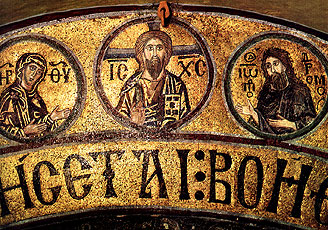
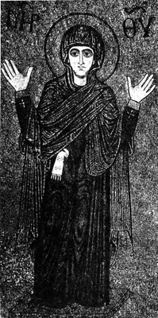
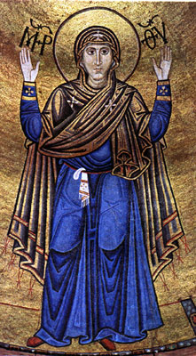
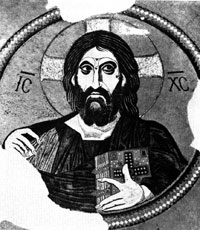
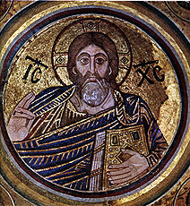
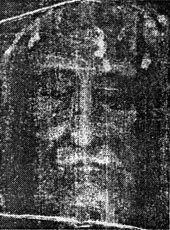
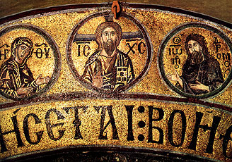
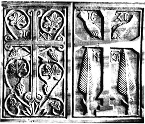
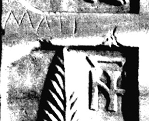

Образ Христа у Деісусі Святой Софії Києвській
Образ Христа у Деісусі Святой Софії Києвській

Образ Христа у Єкатерининському монастирі
До 1000-ліття Софії Київської
Цього року за рішенням ЮНЕСКО світова громадськість повинна святкувати 1000-річчя від дня заснування святої Софії Київської. Однак це свято було затьмарено торік дискусією між двома науковими авторитетами, з однієї сторони академіком НАН України П.П. Толочко, а з іншого боку – доктором історичних наук, зав. відділом науково-історичних досліджень Національного заповідника «Софія Київська» Н.М. Нікітенко. Суперечці було присвячено чимало статей у газетах й Інтернет виданнях. На жаль, вона вийшла на міжнародний рівень, і справа дійшла навіть до звернення в ЮНЕСКО із проханням скасувати святкування. Суть розбіжностей викладена в газеті «Нової» 15 лютого 2010 р., як Pro й Contra і зводиться вона коротко до наступного.
Н.М. Нікітенко стверджує, що собор був заснований Володимиром, закладений 4 листопада 1011 р., а освячений – 11 травня 1018 р. Найдавніші нелітописні джерела, «Слово» Іларіона (1022) і хроніка єпископа Тітмара Мерзебурзького (1018), говорять про виникнення Софії в другому десятилітті XI століття. На користь цих дат, крім літературних джерел, свідчить... сама Софія Київська. Виявлені на фресках у різних місцях надписи-графіті (1018-1021, 1022, 1028, 1033 й 1036 р.), спростовують 1037 р. як час заснування або завершення будівництва. Перекреслюють вони й 1017 р. – виходить, що в 1018-1021 р. він уже стояв і був розписаний.
П.П. Толочко назвав роботу Надії Нікітенко науково-популярною, а «ультраранню» дату закладки собору плодом фантазії автора й безвідповідальним епатажем. На думку академіка, сперечатися можна тільки про 1017-1037 р., причому сам він схиляється до 1017 р., що й обґрунтував у ряді робіт. Головний контраргумент – «Повість временних літ» (ПВЛ). Син академіка, О.П. Толочко, член-корр. Інституту історії НАН України вважає, що згадана Тітмаром Мерзебурзьким церква святої Софії була дерев'яною й пізніше згоріла. Її не можна ототожнювати зі спорудженням, що заклав і побудував Ярослав. Таким чином, затверджується, що ктитором собору був не Володимир, а Ярослав Мудрий. Не підтримали «ультрараннє» датування й у НДІ пам’ятко охоронних досліджень. Зокрема, Тимур Бобровський, зам директора по науковій праці, заявив, що найбільші сумніви викликають дати, приписувані виявленим графіті, оскільки в той час вони позначалися не цифрами, а буквами зі спеціальними титлами. На деяких з них титла відсутні.
На початку 2010 р. сперечальниками були проведені дві окремі конференції в підтримку своїх позицій, але проблема до кінця залишилася невирішеною. Тим часом, існує позиція, альтернативна цим двом, і вона, при уважному ставленні до неї, може виявитися ближчою до реальності. Про цю позицію сперечальники знають, але чомусь її не врахували. В 2005 р. їм були надані мої дві книги «Екзампей» й «Таємниці «Слова про Ігорів похід» (далі «Таємниці») з результатами цих досліджень. Крім того, обидві ці книги були спрямовані до Інституту літератури ім. Т.Г. Шевченка НАН України при листі на ім'я директора, акад. М.Г. Жулинського 18 січня 2007 р. Тут викладається ця науково обґрунтована позиція скорочено, детально з нею можна ознайомитися в статті «Слово про 1000-ліття святої Софії Київської» (далі «Слово»), розміщеному на цьому сайті.
В основі природи виниклої суперечки навколо датування собору Софії Київської, на мій погляд, лежать дві основні проблеми: етична й методологічна.
Перша проблема полягає в тому, що неприпустимо атеїстичними методами, діючи як не християни (Мф. 7:1-2), вивчати джерела зародження християнської культури при переважній відсутності віри в Бога й у свою неординарну культуру. Зрештою, все це нагадує євангельський сюжет з’явлення Ісуса після воскресіння Фомі Близнецю, названому за це «Фомою невіруючим». Під час першого приходу воскреслого Ісуса своїм учням, Фоми з ними не було. У Євангелії від Іоанна (20:25-29) читаємо: «Інші учні сказали йому: ми бачили Господа. Але він сказав їм: якщо не побачу на руках Його ран від цвяхів, і не вкладу перста мого в рани від цвяхів, і не вкладу руки моєї в ребра Його, не повірю. Після восьми днів знову були в будинку учні Його, і Фома з ними. Прийшов Ісус, коли двері були замкнені, став посередині них і сказав: мир вам! Потім говорить Фомі: подай перст твій сюди й подивися руки Мої; і не будь невіруючим, але віруючим. Фома сказав Йому у відповідь: Господь мій і Бог мій! Ісус говорить йому: ти повірив, тому що побачив Мене; блаженні що не бачили й увірували». Про що говорити, кожен науковець за визначенням повинен поводитися подібно Фомі невіруючому, тобто все брати під сумнів і перевіряти, але при цьому нам всім потрібно мати, якщо не віру, то хоча б совість, і не встромляти пальці у відкриті рани щойно воскреслого...
Друга проблема пов'язана із кризою джерелознавства, як науки взагалі, і методології вивчення давньоруських джерел, зокрема. Нових джерел практично не має, а старі вивчені тим самим методом прямого читання їх з одних вихідних позицій. На мій погляд, дослідження давньоруських джерел значною мірою гальмується невірною вихідною позицією. ХХ століття, пронизане державним атеїзмом, помітно затримало осмислення значення для нашої культури хрещення Київської Русі, створення неканонічних собору святої Софії Київської й «Слова про Закон і Благодать» разом з «Молитвою» й «Сповіданням віри» Іларіона (далі разом – СЗБ).
На жаль, навіть глибоко шановний мною академік Д.С. Лихачьов (вважаю його своїм вчителем), що так багато зробив для дослідження «Слова про Ігорів похід» (СІП), а також для давньоруської літератури в цілому, по цій же причині прийшов до природного для його часу висновку про те, що в давньоруської літературі не існувало узагальнюючого жанру. Між тим, при ближчому розгляді з’ясувалося, що спочатку давньоруська література, поезія, музика, драматургія, образотворче мистецтво й архітектура були винятково богослужбовими, тобто перебували в руслі церковного богослужіння, підкорялися Типікону, Церковному календареві й Божим заповідям. Таким чином, у нас є всі підстави назвати цей період розвитку культури Київської Русі епохою всесвітнього (всеохоплюючого) богослужіння, а узагальнюючий жанр давньоруської літератури й інших мистецтв – богослужбовим.
Застосування богослужбового аналізу, наприклад, для вивчення СЗБ Іларіона дозволило з'ясувати, що за формою цей твір міг використатися в трьох видах служб: літургії, цілонічного пильнування (у цьому випадку «Молитва» й «Сповідання віри» мінялися місцями – з цією метою вони й були записані окремо), а також як канон Кольорової тріоді з 8-ми пісень. Останній, як візантійський канон, обрамлявся акро-, мезо-, й теле-віршами, які, у свою чергу, могли звиватися за певними правилами в акромезотелевірши, що містять нову приховану інформацію. При цьому кожен окремий вірш було створено з 13-ти складів, по числу Апостолів і Христа. Наприклад, таких прихованих віршів у СЗБ Іларіона вдалося виявити близько 800.
Основні висновки із читання схованих віршів СЗБ викладені в книгах: «Екзампей» (Миколаїв, 2005, с.82-120), у монографії «Таємниці...» (Миколаїв, 2005, 560 с.), а також в есе про Нікона-Іларіона «Засновник нашої культури». В «Таємницях...» (с. 43-87) описана нова методика читання схованих віршів в стародавніх текстах і наведені приховані вірші з давньоєврейської, давньогрецької, візантійської, давньоболгарської й давньоруської літератури, виявлені на основі одного й того ж самого методу при дотриманні принципу презумпції невинності вихідного тексту. За 30 років роботи в цьому напрямку виділено за цією методикою близько 1200 таємних віршів. У СІП, завдяки ідеальній віршованій розбивці тексту, виконаної Д.С. Лихачовим, удалося виділити 250 таких віршів, без коректування вихідного тексту, і знайти відповіді на багато невирішених питань історії.
Новизна зазначеного відкриття очевидна. На жодній з наукових конференцій, проведених обома сторонами окремо в лютому (Н.М. Нікітенко) та в квітні (П.П. Толочко) 2010 р., цей підхід не обговорювався. Що стосується актуальності, то акад. Л.Д. Ландау говорив, що метод важливіше за відкриття, тому що на його основі можна зробити багато відкриттів. У цьому неважко переконатися, якщо порівняти всі дані, які відомі науці про хрещення Київської Русі й про створення святої Софії Київської з тим, що вдалося з'ясувати з богослужбового аналізу СЗБ Іларіона. Весь богослужбовий аналіз СЗБ поки не виданий, тому, щоб зрозуміти про що йде мова, можна (підкреслюю – без обговорення!) ознайомитися зі згаданим вище есе «Засновник нашої культури» в Інтернеті або в книзі «Екзампей». Там відзначено, що Іларіон народився у позашлюбної доньки Анни від Оттона II, Ніки-Ірині, й Володимира 28 березня 997 р., на Великдень, через три дні після того, як його матері на Благовіщеня, виповнилося 18 років. Ім'я Ніки вона отримала від візантійських імператорів, Ірини – від римських. Що й говорити, народження сина на Великдень у матері Ніки-Ірини (979-1025), що народилася 25 березня, на Благовіщеня, і в батька Володимира (947-1015), який народився 30 червня, в день Собору славних і все хвальних 12-ти апостолів, було великим знаменням. Тепер спробуємо навести докази того, що зазначені тут збіги дат зіграли важливу роль в ідеології створення собору.
Про конкретні текстологічні докази, призначені для обговорення. Насамперед, відзначимо, що в СІП Кирило Туровський назвав Іларіона Бояном тому, що він народився 28 березня, у день пам'яті болгарського князя Бояна, потерпілого за віру близько 830 р. (див. Церковний календар). У схованих віршах СІП Кирило вказав на те, що «Приніс Боян Нестора, славлячи 25 березня (Ніку), до її 50-річчя!», тобто Нестор народився 25 березня 1029 р. («Таємниці...», с. 129). В акротелевірші СІП Кирило записав: «Заступлюся тут за віщого Бояна, так (говорячи): «Тяжка Слава (дісталася) тобі Никону Великому!» («Таємниці...», с.133). Так що, у ході досліджень з'ясувалося, що автором російського літописання був Іларіон, а Нестор (1029-1113) продовжив його справу, після призначення батька митрополитом у 1051 р.
Оскільки основна літературна доказова база датування створення Софії Київської у сторін, що сперечаються однакова,– це ПВЛ і СЗБ, то можна констатувати, що автором відкритих і схованих текстів ПВЛ і СЗБ була одна й таж особа – Іларіон. У відкритих текстах, він і всі наступні за ним літописці писали те, що потрібно було діючої владі, а в прихованих – правду, про яку не завжди можна було говорити відкрито. Так що, публікації Wikileaks не нове явище. Конфлікт між творцями й владою вічний і, починаючи із шумеро-аккадских часів, творці ховали правду від влади в таємних текстах. В «Таємницях...» (с. 308-325) наведені зразки прихованих віршів Мойсея, Давида, Гомера, візантійських і давньоболгарських. Але те, що створили давньоруські літописці з подачі Іларіона перевершує по віртуозності все відоме. Причому, якби Кирилом Туровським (1101-1208) у СІП не були би надані алегоричні ключі щодо розшифровки, то таємниця так би й залишилася нерозгаданою, тому що не було ніякого сенсу приховувати й відразу розшифровувати.
Потрібно особливо підкреслити, і це показано в «Таємницях...» на багатьох прикладах, що Іларіон заклав основи руського літописання, якому не має аналогів у світовій культурній спадщині. Унікальність Київського літопису полягає в тому, що з подачі Іларіона всі записи в літопису і після нього велися у вигляді циклу безперервних добових церковних служб, починаючи від 9-го години, малої й Великої вечерні, утрені, 1-ї години й кінчаючи літургією й 3-ю, 6-ю годиною. При цьому у форму церковних пісень вкладався історичний зміст. Так що, увесь Київський літопис може бути сьогодні виконаним як грандіозне багато добове історичне богослужіння, і в силу цього він не має аналогів у світовій культурі. Кожна із записів у циклі добових служб оформлена у вигляді візантійського канону, що містить сховані вірші. З'ясовано, що слідом за Іларіоном і Нестором складання Київського зводу (т.зв. Іпатіївського) літопису, продовжив Сильвестер, Кирило Туровський і його син Андрій, що переїхав з Турова на Галичину. От чому друга частина Іпатіївського літопису одержала назву Галицької.
У схованих віршах СЗБ, як канону, Іларіон привів дату закладки собору Святої Софії на Кіріо-Пасху 25 березня 1011 р., окремо вказав дату освячення Іоанном вибудуваного собору на Кіріо-Пасху 25 березня 1022 р. і багаторазово їх продублював для надійності в різних сполученнях букв, що виражають цю дату. Дублювання робилося для того, щоб виключити помилку, можливу при читанні прихованих віршів. На закладенні собору були присутніми: Володимир, Анна (померла 3 вересня 1011 р.), Ніка-Ірина, Іларіон, закладку освятив митрополит Іоанн. Докази щодо цієї дати наведені в есе «Слово про 1000-ліття святої Софії Київської» на основі складання акровіршів в «Сповіданні віри» Іларіона, розглянутої, як 9-ї богородичної пісні канону СЗБ. Пісня розбита на 13 тропарів, перший тропар називається ірмосом, він по змісту повинен бути біблійним, тобто історичним, і, якщо СЗБ присвячено історії створення Софії Київської, то в прихованих віршах ірмоса повинна йти мова про закладку собору. Таким чином, богослужбовий аналіз довів, що собор Святої Софії був закладений 25 березня 1011 р., коли Ніці-Ірині виповнилося 32 роки. Як бачимо, ідея Христа й Апостолів знайшла відбиття в схованих віршах на 13 складів, в 13 тропарях кожної з 8-ми пісень канону СЗБ, в 13 бокових вівтарях з головним й 13 куполах собору. І цей єдиний задум належав Іларіонові.
Але, ще більш доказовим є те, що ця ж дата закладки собору наведена в таємних віршах Кирила Туровського в 3-му Слові, присвяченому Антивеликодню («Таємниці...», с. 89-93). Там же Кирило повідомив, що мати Іларіона Ніка народилася 25 березня 979 р. і вмерла 3 вересня 1025 р., представилася «до»=47 років, тобто на 46-му році життя, а також те, що за 8 років до своєї кончини, вона наказала Іларіонові прийняти чернецтво з ім'ям Никон. Володимир привласнив Ніці-Ірині ім'я Софії за те, що вона під час вигнання з 1002 р. по 1008 р. закінчила один з університетів Європи й завдяки цьому була в нього радником. Після смерті Володимира вона із цим ім'ям прийняла чернецтво у вибудуваному нею Іринінському монастирі.
І тут Кирило відзначив наступне, цитую переклад: «Мати Іларіона, березня 25 (Ніка), послала за Митро(политом) добрим в 1008 р. /Закладений собор 25 березня 1011 р. 41-літнім Авраамом (народ. 1 жовтня)» («Таємниці...», с. 92).
Призначення Іоанна (Авраама) митрополитом в 1008 р. відомо, новою тут є дата закладки собору 25 березня 1011 р. Таким чином, спочатку Ніка з Іларіоном створювали собор, присвячений Христу Руської церкви Володимирові та його 12-ти Апостолам (по даті його народження 30 червня). Але, храмовим святом був день хрещення Володимира в Корсуні 8 червня 988 р., що з’ясувалося з акровірша, який поєднує перші вірші ірмосів канону служби утрені («Похвали Володимиру»):
«Хвалять 8 червня всі, тобі співаю подобніче (Костянтина)» («Таємниця...», с. 86).
Ще більш змістовними для нашої теми є 5 віршів загального акровірша Богородичної пісні канону утрені СЗБ, надаю переклад цих 13-складових віршів («Таємниця...», с. 85):
«Після 1025 р. вересня 3-го твоє не зруйнували розумне / Твій, як Соломона, будинок Божий (освятили) 8 вересня 1027 р. / На свято твоє до 3 вересня 1031 р. на 6-річчя златої твоєї церкви / Її величі привласнили святе ім'я твоє / Так буде з нею й рака твоя місту».
Про що тут говориться? По-перше, про те, що після кончини Ніки-Ірини-Софії 3-го вересня 1025 року продовжували собор зводити по її задуму. По-друге, собор був освячений на Різдво Богородиці, 8 вересня 1027 р. По-третє, на 6-річчя кончини Ніки, 3-го вересня 1031 р., собор вже мав ім'я Софії. По-четверте, в цей же день у собор внесли раку з порохом Ніки-Софії. Але цим відомості не вичерпуються. Далі потрібно ще редукувати цей п'ятивірш за правилами звивання «Слав оба полу времені» («Таємниця...», с. 54-66), після чого можна одержати три нових 13-складних віршів, надаю переклад:
«До її святого дня 3 вересня 1031 р., тому що свята вона 25 березнем, / Її будинок Божий був сильно зруйнований 2-го (або 20-го) березня 1017 р. / Назвали Богові ім'я її церкви Божої Умною (Софією)».
Новим тут є вказівка на руйнування собору, що відбулося 2 або 20 березня (точніше поки не можна встановити) 1017 р. Зі схованих віршів з'ясувалося, що коли собор був майже вибудуваний, він піддався сильному руйнуванню. Як бачимо, ці відомості цілком збігаються із хронікою єпископа Тітмара Мерзебурзького (1018). Після «звивання слав» цього тривірша, одержимо заключний акромезотелевірш наступного цілком підсумкового змісту: «Дали колишньої церкви 8 червня будинку ім'я розумної 25 березня на її 51-річчя». Це звивання нагадує російську матрьошку, в заключному вірші заховане головне – те, що Апостольський собор 25 березня 1030 р. було перейменовано у собор святої Софії.
Зі сказаного видно, що СЗБ було виконано Іларіоном 3 вересня 1031 р., коли була ще жива дружина Ярослава Мудрого Ірина. Коливання дат від 1041 р. до 1051 р. митрополитства Іларіона в списках СЗБ (збереглося більше 50-ти), очевидно, пояснюється тим, що переписувачі намагалися 1031 р. погодити із записом у ПВЛ під 1051 р. Але, як бачимо, це була вже друга спроба, без згоди Константинопольського патріарха поставити Іларіона митрополитом. Принципово новим у викладі Іларіона є свідчення про найважливішу роль Ніки-Ірини-Софії в утвердженні державності й християнства в Київській Русі. Зважаючи на все, ця роль залишилася невідомою для нас по тій же причині, по якій і Рюрик став варягом, хоча він народився у Турові, через те й звернення в «СІП» до його нащадків лунає таке – «буй тур», тобто Рюрикович. Ніка-Ірина була онукою двох імператорів. Можливо, що через це нам нічого не відомо з відкритих текстів про походження Іларіона. Зрозуміло, що літописці вочевидь боялися втручання через таке походження до державних справ Київської Русі, а ми маємо лише пишатися цим.
Викладене ілюструє продуктивність методики читання прихованих текстів. В цілому вся інформація, наведена вище, лежить в рамках наукової логіки й радикально не змінює відомі історичні свідчення, уточнюючи їх убік реальності. Особливо хочу попередити від приклеювання богослужбовому аналізу таких ярликів, як конспірологія, криптографія і, тим більше, одіозної з наукової точки зору «нової хронології» Фоменко. Справа в тому, що тут йдеться про праці святих нашої православної церкви і це одне вже вимагає від нас молитвено-шанувального відношення до них.
Розглянемо ще й наочні докази, присутні в самому соборі Святої Софії Київської.
1. Викладене дозволяє зрозуміти, чому при 13-банях собор на честь Христа й Апостолів замість 13-ти має 9 бокових вівтарів з головним,– 4 бокові вівтарі збереглися й використовуються як картинні галереї. Це прямий доказ того, що спочатку собор був задуманий ктиторами, присвяченим Христу й Апостолам і це цілком погоджується з свідченнями, отриманими зі схованих віршів.
2. Важливий акт таємного відвідування Володимиром Константинополя з 4 по 28 березня 988 р. знайшов відбиття у світській фресці південно-західної вежі собору святої Софії Київської, що одержала назву «Іподром». Імовірно, автором цієї фрески виступив Іларіон. І цю фреску, як довела Н.М. Нікітенко, дійсно, варто назвати «Посли Володимира Святославовича й імператор Василь II на константинопольському іподромі». Моє уточнення торкається лише того, що на фресці «Іподром» у південній вежі Київської Софії в ролі руського князя-посланника зображений Володимир двічі для того, щоб переконати нас у тім, що князь перебував у Константинополі інкогніто, у ролі свата.
3. Зі таємних віршів СЗБ з'ясовано, що Ніка з Іларіоном об'їздила всі кращі храми Візантії й Рима. На її прохання художник у Венеції скопіював Оранту, імовірно, із зображення на головному куполі над вівтарем собору Святого Марка. Неважко побачити подібність її із зображенням у соборі Святої Софії. В «Екзампеї» (с. 119-120) відзначено, що є багато схожих зображень Орант у різних храмах й у тій же Венеції, просто тут є більше подібних деталей.
|

Зображення Оранти у соборі Святого Марка у Венеції |

Зображення Оранти у соборі Святой Софії в Києві |
4. Володимир і Ярослав давали Іларіону до початку розписів собору в 1022 р. корабель для копіювання кращих ікон Візантії. Майже напевно можна затверджувати, що композиційно Пантократор нашої Софії має подібність із таким, розміщеним у центральному куполі церкви монастиря Дафні під Афінами. Для порівняння наведений тут й позитив Лику Христа на Плащаниці, що у той час виставлялася в Софії Константинопольської.
|

Пантократор у монастирі Дафні |

Пантократор Софії Києвській |

Позитив Лику Христа |
5. Надзвичайно ціннісним є наявність у Святій Софії Київській образа Христа, зображеного в Деісусі, про яке Іларіон пише, що він тричі бачив і зробив копію обличчя Спаса Нерукотворного на Убрусі. Коли 16 серпня 1014 р. здійснилося 70 років від дня перенесення Убруса з Едесси, Іларіон спеціально прибув до його виносу в Константинопольську Софію. Цінність цієї копії полягає в тому, що після розгрому Константинополя в 1204 р. хрестоносцями, Убрус загинув під час морської бурі разом з іншими святими реліквіями при спробі вивезти їх на кораблі. Для порівняння можна використати зображення ікони VI в., що перебуває в найдавнішому Єкатерининському монастирі біля гори Сінай, що також була написана з Убрусу.
|

Образ Христа у Деісусі Святой Софії Києвській |
Образ Христа у Єкатерининському монастирі |
6. Потрібно привести ще й можливий автопортрет неперевершеного генія світової культури, родоначальника літератури, музики й драматургії, живопису й арxітектури, літописання, чернецтва Київської Русі Іларіона-Никона, чий портрет, як невідомого пророка або святого, імовірно, із сувоєм СЗБ у лівій руці й правою рукою він вказує на матір свою – Ніку-Ірину-Софію-Оранту, їм же зображену у вівтарі. Автопортрет знаходиться на першому поверсі в простінку між боковими вівтарями Св. Георгія, брата його, Ярослава Мудрого, і Петра й Павла, присвяченого його батькові Володимиру Святославовичу (Г.Н. Логвін, «Софія Київська», К., 1971, мал. 180).
7. Іларіон пише у таємних віршах про те, що до 15 серпня 1027 року він закінчив розпис «На небесах роду Володимира з 13 фігур», який перед освяченням судив Іоанн. Так ось він звернув увагу на те, що перейменування собору вимагає, щоб ктитор (засновник) підносив собор не Христу, розташованому в центрі композиції, а Богоматері. Через рік після освячення ктиторська фреска була переписана Іларіоном. Для розуміння програми розписів бокових вівтарів важливо знати, що кожний з 12 бокових вівтарів мав прив'язку до днів народження Святих тих осіб, які зображені на ктиторській євхаристії. У цьому зв'язку й потрібно розглядати розміщення осіб–ктиторів, до числа яких можна впевнено віднести: Володимира й Анну, Ярослава Мудрого й Ніку, Іларіона й Ірину (Інгігерду) дружину Ярослава. Безсумнівно, обидва ряди апостолів Землі Руської по іменах були літургічне замкнутими. Чоловічий ряд починався Володимиром, а закінчувався Володимиром Ярославовичем. Жіночий ряд починався Анною, а закінчувався – Анною Ярославівною. Слід підкреслити, що зображення росту на ктиторській фресці 1028 р. корелює з віком Володимира Ярославовича (р. 1820 р.) і Ганни Ярославівни (р. 1024 р.). Спираючись на акварель 1843 р. Ф.Г. Солнцева, можна припустити, що другим з краю після Володимира Ярославовича Іларіон зобразив себе із хрестом. Інші 4 фігури повинні бути визначені методом наближення по прив'язці їхніх днів народження до програм розписів, у відведених їм бокових вівтарях і тут унеможливлена сваволя, яку допускали ряд авторів з якихось інших міркувань.
8. В альбомі Г.Н. Логвіна «Софія Київська (Державний архітектурно-історичний заповідник)» (К., 1971), під № 274 наведені деталі саркофага Ярослава Мудрого, на одному із яких під титлами у верху хреста читаються символи Ісуса Христа ІС ХС, а відразу під поперечиною хреста чітко читається ім'я Ніки, теж під титлами (як царюючої особи): НІКА. На самій поперечині хреста напевно рукою Іларіона (це автограф!) надряпаний графіті: МАТІ. В цьому простому записі вкладено глибокий символізм. Ніка, дійсно, була матір'ю Іларіона, але тут він мав на увазі не тільки це. Тут зашифрована також і дата установки раки з порохом Ніки в соборі святої Софії: 4-го дня, 1-го місяця, 1031 р., тобто 4 вересня 1031 року. Відбір цифр іде, як в акровірші, потрібно брати від початку. У давньоруській мові цифри позначалися буквами: М – це 40, оскільки в місяці не буває більше 31 дня, залишаємо тільки першу цифру для дати; А – це 1-й місяць при вересневому початку відліку року; ТІ – це 310, від неї, для позначення року в XI столітті залишена тільки цифра 31, тому що в сторіччі не буває 310 років. Зверніть увагу – тут теж не має титла, бо це викривало би таємний зміст. При 4-х розкриттях саркофага в ньому, тепер вже ясно, виявили кістяки: чоловічого – Ярослава Мудрого й жіночого – Ніки.
|

Деталі саркофага Ярослава Мудрого |

Графіті: МАТІ |
9. Ще один приклад наочного доказу даних, наведених у таємних віршах, стосується напису грецькою мовою, що обрамляє конху апсиди, усередині якої перебуває зображення Оранти. Напис виконаний із уживанням латинських букв не випадково, цим підкреслювалося римсько-грецьке походження Оранти. Це цитата 6-го вірша 45-го псалма Давида: «Бог посередині нього (тобто міста Києва – А. З.), воно не похитнеться; Бог допоможе йому із самого раннього ранку». Через цей напис Оранта отримала назву «Нерушима стіна». Філософсько-богословське тлумачення цього тексту розглянуто в словнику блискучого знавця багатьох древніх і сучасних мов Сергія Аверінцева «Софія-Логос» (К., “Дух і Літера”, 2001). Майже в кожного древнього тексту, по висловленню С.С. Аверінцева, є арифметичний й алгебраїчний зміст. Розглянемо зміст цього тексту. Звернемося тільки до центральної частини тексту, він перебуває прямо над головою Оранти, і випишемо тільки ту частину його, що міститься між буквами QH ... HQ, які симетрично обрамляють цей текст: QH – СЄТАІ:В – HQ. У чисто грецькому записі розглянута нами середня частина цього тексту буде виглядати так: s e t a i : b o. У результаті можна трактувати цю частину тексту, як вказівку на головні дати собору: на його освячення в 1027 році – i: bo, тут i: – це тисяча, а bo – позначає число 27. Тут і далі відбираються, як в акровірші тільки перші цифри. У частині тексту, що розташована до розглянутої – se – це 25, або вказівка на 1025 р., у якому t – позначає 3-є число, a – перший місяць року, тобто вересень. Так що, тут зазначена дата кончини Ніки-Ірини-Софії-Оранти – 3 вересня 1025 р.
Викладене свідчить про глибоку продуманість обраного тексту псалма, що прямо є наслідком повсякчасного використання цього прийому Іларіоном у таємних віршах СЗБ і ПВЛ. Причому, слід зазначити, що цифри в наведених мною написах й у СЗБ писалися без прийнятих тоді позначень відмінності заголовних букв від цифр, тобто без титла, у цьому була видна їхня сакральність. Але ж збіг наведених трьох дат, що мають місце в соборі Софії Київської, відкритих для огляду, з датами, отриманими зі схованих віршів, так само як вказівка імені Ніки на раці, не є випадковим, тому що й там, і тут за ними стояв Іларіон. Наведені дати не вимагають такого складного аналізу, як при читанні графіті. Потрібно тільки взяти до уваги, що найдавніша література від Мойсея до Іларіона була пронизана символізмом, у якому творці служили алегорично вираженій істині, як Богові.
Викладене дозволяє підвести підсумки по спірних питаннях (дати надані по старому стилю):
1. Закладка собору відбулася на Кіріо-Пасху, 25 березня 1011 р., рік закладки собору правильно вказала Н.М. Нікітенко, а весняний початок будівництва 25 березня – П.П. Толочко.
2. Собор був освячений на Різдво Богородиці, 8 вересня 1027 р., Іоанном як собор Христа й Апостолів, тобто дата завершення собору лежить між датами, зазначеними сторонами, що сперечаються.
3. На Благовіщеня, 25 березня 1030 р., у день 51-річчя Ніки-Ірини-Софії, собор Христа й Апостолів було перейменовано в ім'я святої Софії.
4. Перейменування собору є доказом того, що головним ктитором його було визнано Ніку-Ірину-Софію, а не Володимира або Ярослава Мудрого, як вважають сторони, що сперечаються.
5. У ніч із 3-го на 4-е вересня 1031 р. відбулося внесення раки з порохом Ніки й перше виконання Іларіоном СЗБ, як цілонічного пильнування. Ярослава було поховано в раці Ніки пізніше, в 1054 р.
6. Як бачимо, в Іларіона, який писав ПВЛ, не було підстав назвати собор, присвяченим Софії, до 1030 року, а значить і запис у Новгородському літописі від 1017 р. зроблено пізніше цієї дати.
7. Записи Іларіона у ПВЛ, починаючи з 1022 р. і до 1036 р., досить короткі тому, що весь цей час він був зайнятий роботами по розпису ікон у соборі, а з 1031 р. – службами в ньому, як митрополит. Цим і п.6 можна пояснити пізній запис у ПВЛ про собор в 1036-1037 рр. В основному ж Іларіон вкладав докладні свідчення про створення собору в таємні вірші СЗБ, у тому числі й у ПВЛ. І всім, хто спирається лише на прочитання відкритого змісту древніх текстів, потрібно знати про їх можливу неповноту через наявність в них прихованого тексту, створенню якого творці віддавали перевагу.
8. Слід зауважити, що всі наведені тут нові дані щодо святої Софії Київської належать святим православної церкви Іларіону й Кирилу Туровському, а не мені. Зрозуміло, що при непростому виділені й читанні таємних віршів мене, як ретранслятора, можна звинуватити в якихось випадкових помилках або промахах, але тільки не в датах, які багаторазово дублювалися, і не в працездатності методу читання прихованих віршів, що доведено на багатьох різних древніх творах різних авторів.
9. Як це ні парадоксально, але оглашенним (нехрещеним) не може відкритися таємниця схованих віршів і написів у соборі доти, поки вони не причастяться до Заповідей Божих. У точності, як про це сказано в притчі про сівача (Лк. 8: 4-18): «Учні ж Його запитали в Нього: що б значила притча ця? Він сказав: вам дане знати таємниці Царства Божого, а останнім у притчах, так що вони бачачи не бачать і чуючи не розуміють... Сказавши це, Він виголосив: хто має вуха чути, такі чує!.. Через те, що немає нічого таємного, що не зробилося б явним, ні таємного, що не зробилося б відомим й не виявилося б. Отже, спостерігайте, як ви слухаєте: тому що хто має, тому дано буде, а хто не має, у того відніметься й те, що він думає мати».
10. За всім сказаним вище проглядається цілісний підхід, що пояснює багато невідомих сьогодні моментів у створенні святої Софії Київської, і це не дивно, якщо звернути увагу на те, що інформація в цьому випадку отримана, що називається з перших рук, від одного із творців собору Іларіона-Никона.
Таким чином, на мій погляд, у нас є досить обґрунтований привід для того, щоб 25 березня (7 квітня) 2011 року гідно відзначити 1000-річчя закладки собору святої Софії Київської, а 3-4 (16-17) вересня – 980-річчя першого виконання Іларіоном «Слова про Закон і Благодать» у самому соборі. Разом з тим, ми опинилися в колосальному боргу перед засновником нашої культури Іларіоном-Никоном, поховавши його найбільші діяння в нестямі й безвір'ї.
Так давайте ж всі разом, не залишаючи наукових суперечок (істина не затверджується негайно!), віддамо належне Іларіонові та його матері Ніці-Ірині-Софії-Оранті, хоча б у цьому, нажаль ще надто слабкому вираженні подяки, за чудо створення ними собору святої Софії Київської. В історії світової культури ми не знайдемо жодного подібного приклада, щоб одна людина, як Іларіон, виступив одночасно творцем архітектурної композиції собору, його будівельником, іконописцем (розписав 88 головних ікон), творцем власної літургії, пристосованої для виконання в цьому соборі, і, нарешті, у повній згоді архітектури, тексту, музики й розписів собору, виконання літургії як митрополитом!
Миколаїв, 19.03.2011 р.
Анатолій Золотухін,
голова Пушкінського клубу.